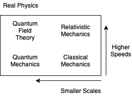

20.1 Introduction to Computational CFD
What is computational fluid dynamics? Put simply, it's the use of computers to obtain a numerical solution to the governing equations of fluid dynamics. As always, the numerical solution is an approximation to the real solution to the equations, but additionally those equations are themselves only an approximation of the real physics.

We will be interested in speeds much less than ( and distances much greater than the atomic radius .
Classical mechanics is governed entirely by Newton's laws:
Modeling using only classical mechanics can be and is done. For example, the PIC ("particle-in-cell") method models individual particles. But often, even in PIC simulations, we approximate many particles ( by fewer superparticles . Modeling with fewer particles leads to statistical errors, since noise is reduced with larger numbers of particles. When modeling long time scales, those statistical errors build up. PIC is only useful for timescales around seconds.
To handle longer time scales and large numbers of particles, we can group the particles into elements in phase space . The governing equation is the Boltzmann equation

where is the probability distribution function - the number of particles at location with velocity at time t. This lets us replace the massive discrete particle simulation with an easier continuous set of probability distribution components. However, the 3-dimensional problem has been turned into a 7-dimensional (3 space, 3 velocity, time) one, which is very expensive and slow.
If we assume local thermodynamic equilibrium (in other words, Maxwellian velocity distribution) we can assign a characteristic velocity to spatial (fluid) elements based on the Maxwellian distribution velocity. Formally, this means that we take moments of the Boltzmann equation and we define an equation of state for closure (determining a truncation of the higher-order moments).
Doing so gives us the equations of fluid mechanics, the Navier-Stokes equations. More generally, for conducting fluids or plasmas this gives the magnetofluid equations. In plasmas in which we care about multiple species (ions, electrons), further unification is done by a single-fluid assumption, resulting in MHD equations. These assumptions give impressive agreement with real-world observed results.
20.1.1 Applications
CFD is routinely used for
- The engineering design of airplanes
- Boat hull design
- Automobiles
- Various manufacturing processes
- Computer chassis design
- Weather forecasting
There are a number of unsolved "Grand challenges" in the CFD space
- Numerical Wind Tunnel
- eliminate the need for wind tunnel tests, give access to any Reynolds number
- cost savings
- Global Weather Model
- predict flooding anywhere
- snowstorms
- problem: "butterfly effect"
- Numerical Tokamak
- would help solve the problem of magnetic fusion for energy production
- avoid expensive experiments
20.1.2 Computer Hardware
By 2020 many useful simulations can be done on personal computers. Previously workstations served the purpose of small-scale but greater than personal computer applications. Supercomputers are now the main CFD target - Vector computers (Cray) - Parallel computers (IBM, SGI, Cray...): massively parallel, N > 10,000 - Symmetric multiprocessors: combines parallel and vector computing. Many cores on a single CPU chip.
Parallel computing issues quickly become very important for large-scale simulations that can not fit on a single node. How do you divide a problem so that many processors evenly share work? We can define parallel efficiency to mean N processors should perform the work N times faster. This efficiency is not always possible, and is algorithm dependent. To take advantage of parallel computing benefits, appropriate algorithms must be chosen.